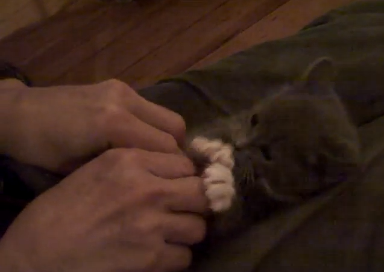

tickle.js
A jQuery plugin for tickling DOM elements. Tickle can be used for shake gesture recognition, scratching virtual lottery tickets, website easter eggs, and more!
Demo
Tickle the cat! Hold down the mouse and shake to tickle. Image source
Demo source
$('img#demo').tickle(function(){
$this = $(this);
$this[0].src = 'images/2.png';
//after 1 second reset the image
setTimeout(function(){
$this[0].src = 'images/1.png';
},1000);
});
Installation
Include script after the jQuery library:
<script src="/path/to/jquery.tickle.js"></script>
Do not include the script directly from GitHub (http://raw.github.com/...). The file is being served as text/plain and as such being blocked in Internet Explorer on Windows 7 for instance (because of the wrong MIME type). Bottom line: GitHub is not a CDN.
Documentation
This plugin is used to bind a tickle event to an element. A tickle event is defined as movement of the mouse where the direction has changed by a specified max angle a specified number of times within a specified amount of time.
How to use
$('element').tickle(callback, options);
Options
Tickle has two argument, the callback function, and an options object that allows you to customize:
- angle: The amount in which the mouse must change it's angle in order to count as a direction change.
- count: The number of times the direction must change before the event is fired.
- time: The amount of time in milliseconds before the count is reset.
- canLeave: Determines if the mouse can leave the element and continue the count.
- requireClick: Require the user to hold the mouse down in order to tickle the target
$('#container').tickle(
function(){
$(this).css('background-color','red');
},{
count: 5,
time: 1000,
canLeave: false,
requireClick: true
}
);
License / Credits
This plugin is released under the MIT license. It is simple and easy to understand and places almost no restrictions on what you can do with the code. More Information